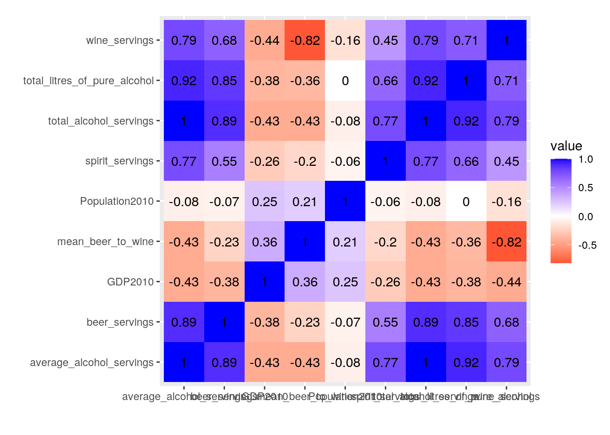
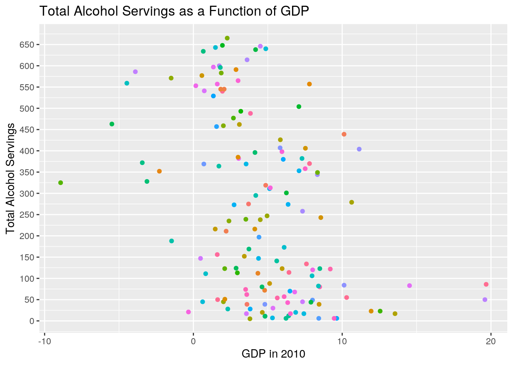
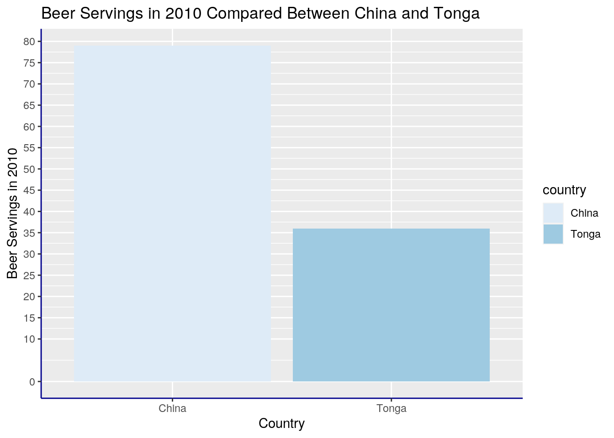
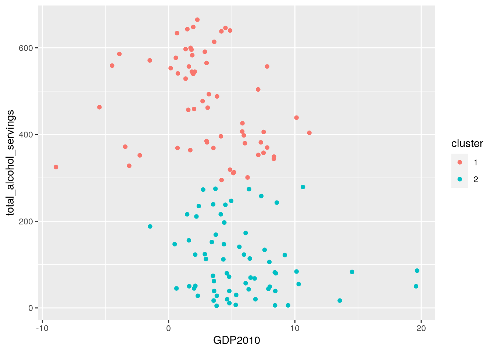
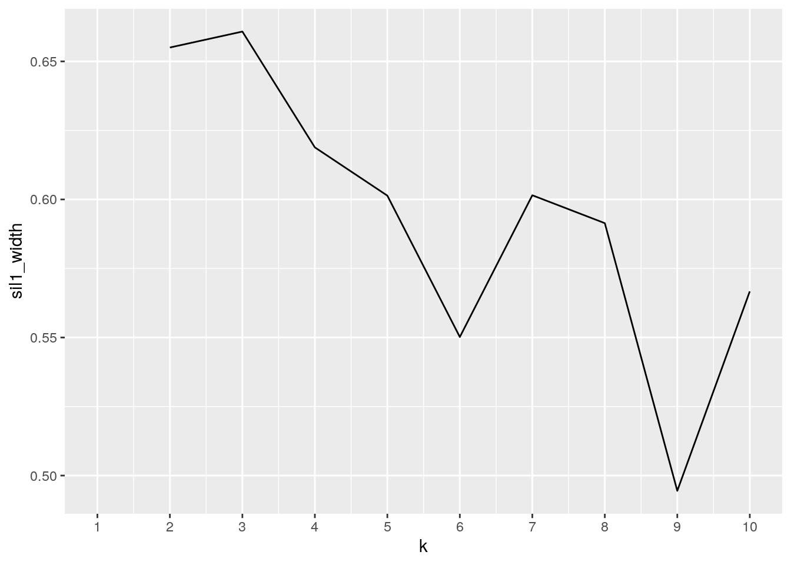
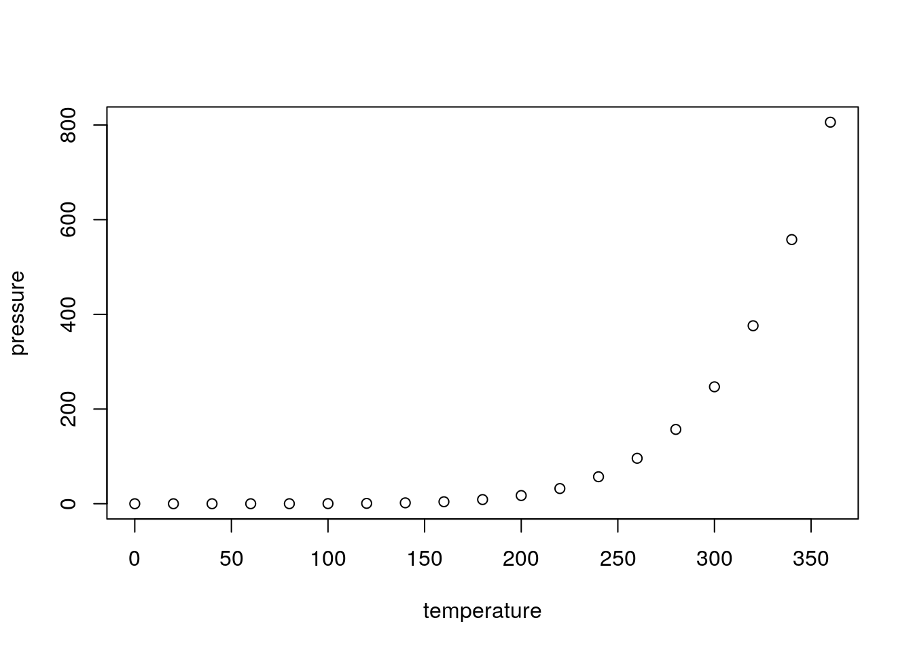

library(ggplot2)
library(tidyverse)
library(readr)
drinks <- read_csv("drinks.csv")
library(readxl)
GDP1 <- read_excel("GDP1.xls")
library(readxl)
population_figures_by_country_csv_csv <- read_excel("population-figures-by-country-csv_csv.xls")Introduction: I have chosen three datasets to merge for this project. I chose to merge three datasets due to the fact that I could not find a sufficient amount of data by only merging two datasets. The first dataset I chose displays the servings of beer, wine and spirits in average serving sizes per person by country in 2010. It then has a column for the total liters of pure alcohol per person. I found this dataset in the "fivethirtyeight" package. It caught my eye because I enjoy going to breweries and wineries, and was inspired to do something related to that. I chose to compare the servings of beer, spirits and wine in each country in 2010 to the GDP of each country from 2000-2019 and the population of each country in 2010. I was interested to see if the GDP or population size in 2010 had any correlation to the total liters of pure alcohol consumed per person. I am expecting to see a positive correlation between GDP and total liters of pure alcohol consumed per person. I found my second two datasets from kaggle.com and was able to isolate and download the population and GDP statistics. I downloaded the datasets into Excel and then imported them into R-Studio.
library(tidyverse)
library(tidyr)
drinks2 <- inner_join(drinks, GDP1, by = c(country = "Country Name"))
drinks2## # A tibble: 152 x 25
## country beer_servings spirit_servings wine_servings total_litres_of… `2000`
## <chr> <dbl> <dbl> <dbl> <dbl> <dbl>
## 1 Afghan… 0 0 0 0 8.83
## 2 Albania 89 132 54 4.9 6.95
## 3 Algeria 25 0 14 0.7 3.8
## 4 Angola 217 57 45 5.9 3.05
## 5 Argent… 193 25 221 8.3 -0.789
## 6 Armenia 21 179 11 3.8 5.9
## 7 Austra… 261 72 212 10.4 3.93
## 8 Austria 279 75 191 9.7 3.38
## 9 Azerba… 21 46 5 1.3 11.1
## 10 Bahrain 42 63 7 2 5.30
## # … with 142 more rows, and 19 more variables: `2001` <dbl>, `2002` <dbl>,
## # `2003` <dbl>, `2004` <dbl>, `2005` <dbl>, `2006` <dbl>, `2007` <dbl>,
## # `2008` <dbl>, `2009` <dbl>, `2010` <dbl>, `2011` <dbl>, `2012` <dbl>,
## # `2013` <dbl>, `2014` <dbl>, `2015` <dbl>, `2016` <dbl>, `2017` <dbl>,
## # `2018` <dbl>, `2019` <dbl>projectdata <- inner_join(drinks2, population_figures_by_country_csv_csv,
by = c(country = "Country"))
projectdata## # A tibble: 152 x 27
## country beer_servings spirit_servings wine_servings total_litres_of… `2000`
## <chr> <dbl> <dbl> <dbl> <dbl> <dbl>
## 1 Afghan… 0 0 0 0 8.83
## 2 Albania 89 132 54 4.9 6.95
## 3 Algeria 25 0 14 0.7 3.8
## 4 Angola 217 57 45 5.9 3.05
## 5 Argent… 193 25 221 8.3 -0.789
## 6 Armenia 21 179 11 3.8 5.9
## 7 Austra… 261 72 212 10.4 3.93
## 8 Austria 279 75 191 9.7 3.38
## 9 Azerba… 21 46 5 1.3 11.1
## 10 Bahrain 42 63 7 2 5.30
## # … with 142 more rows, and 21 more variables: `2001` <dbl>, `2002` <dbl>,
## # `2003` <dbl>, `2004` <dbl>, `2005` <dbl>, `2006` <dbl>, `2007` <dbl>,
## # `2008` <dbl>, `2009` <dbl>, `2010` <dbl>, `2011` <dbl>, `2012` <dbl>,
## # `2013` <dbl>, `2014` <dbl>, `2015` <dbl>, `2016` <dbl>, `2017` <dbl>,
## # `2018` <dbl>, `2019` <dbl>, Country_Code <chr>, Year_2010 <dbl>projectdata1 <- rename(projectdata, Population2010 = Year_2010)
projdata1 <- projectdata1 %>% select(Country_Code, country, Population2010,
"2010", everything()) %>% rename(GDP2010 = "2010")
projdata1## # A tibble: 152 x 27
## Country_Code country Population2010 GDP2010 beer_servings spirit_servings
## <chr> <chr> <dbl> <dbl> <dbl> <dbl>
## 1 AFG Afghan… 28803167 14.4 0 0
## 2 ALB Albania 2913021 3.71 89 132
## 3 DZA Algeria 36117637 3.6 25 0
## 4 AGO Angola 23369131 4.86 217 57
## 5 ARG Argent… 41223889 10.1 193 25
## 6 ARM Armenia 2877311 2.2 21 179
## 7 AUS Austra… 22031750 2.07 261 72
## 8 AUT Austria 8363404 1.84 279 75
## 9 AZE Azerba… 9054332 4.79 21 46
## 10 BHR Bahrain 1240862 4.33 42 63
## # … with 142 more rows, and 21 more variables: wine_servings <dbl>,
## # total_litres_of_pure_alcohol <dbl>, `2000` <dbl>, `2001` <dbl>,
## # `2002` <dbl>, `2003` <dbl>, `2004` <dbl>, `2005` <dbl>, `2006` <dbl>,
## # `2007` <dbl>, `2008` <dbl>, `2009` <dbl>, `2011` <dbl>, `2012` <dbl>,
## # `2013` <dbl>, `2014` <dbl>, `2015` <dbl>, `2016` <dbl>, `2017` <dbl>,
## # `2018` <dbl>, `2019` <dbl>projdata2 <- projdata1 %>% arrange(desc(Population2010)) %>%
mutate(total_alcohol_servings = wine_servings + spirit_servings +
beer_servings) %>% mutate(average_alcohol_servings = (beer_servings +
wine_servings + spirit_servings)/3) %>% select(Country_Code,
country, Population2010, GDP2010, beer_servings, wine_servings,
spirit_servings, total_alcohol_servings, average_alcohol_servings,
everything())
projdata2## # A tibble: 152 x 29
## Country_Code country Population2010 GDP2010 beer_servings wine_servings
## <chr> <chr> <dbl> <dbl> <dbl> <dbl>
## 1 CHN China 1337705000 10.6 79 8
## 2 IND India 1230980691 8.50 9 0
## 3 IDN Indone… 242524123 6.22 5 0
## 4 BRA Brazil 196796269 7.53 245 16
## 5 PAK Pakist… 170560182 1.61 0 0
## 6 NGA Nigeria 158578261 8.01 42 2
## 7 BGD Bangla… 152149102 5.57 0 0
## 8 RUS Russia… 142849449 4.5 247 73
## 9 JPN Japan 128070000 4.19 77 16
## 10 MEX Mexico 117318941 5.12 238 5
## # … with 142 more rows, and 23 more variables: spirit_servings <dbl>,
## # total_alcohol_servings <dbl>, average_alcohol_servings <dbl>,
## # total_litres_of_pure_alcohol <dbl>, `2000` <dbl>, `2001` <dbl>,
## # `2002` <dbl>, `2003` <dbl>, `2004` <dbl>, `2005` <dbl>, `2006` <dbl>,
## # `2007` <dbl>, `2008` <dbl>, `2009` <dbl>, `2011` <dbl>, `2012` <dbl>,
## # `2013` <dbl>, `2014` <dbl>, `2015` <dbl>, `2016` <dbl>, `2017` <dbl>,
## # `2018` <dbl>, `2019` <dbl>projdata4 <- projdata4.1 <- projdata2 %>% filter(Population2010 <=
3e+05) %>% summarize(mean(GDP2010, na.rm = T))
projdata4.1## # A tibble: 1 x 1
## `mean(GDP2010, na.rm = T)`
## <dbl>
## 1 1.00projdata5 <- projdata2 %>% group_by(country) %>% mutate(mean_beer_to_wine = mean(beer_servings/wine_servings)) %>%
select(Country_Code, country, Population2010, GDP2010, beer_servings,
wine_servings, spirit_servings, total_alcohol_servings,
average_alcohol_servings, mean_beer_to_wine, everything())
pd9 <- projdata5 %>% rename(GDP2000 = "2000", GDP2001 = "2001",
GDP2002 = "2002", GDP2003 = "2003", GDP2004 = "2004", GDP2005 = "2005",
GDP2006 = "2006", GDP2007 = "2007", GDP2008 = "2008", GDP2009 = "2009",
GDP2011 = "2011", GDP2012 = "2012", GDP2013 = "2013", GDP2014 = "2014",
GDP2015 = "2015", GDP2016 = "2016", GDP2017 = "2017", GDP2018 = "2018",
GDP2019 = "2019")
sumfunct <- pd9 %>% group_by(country) %>% mutate(mean_beer_to_wine = mean(beer_servings/wine_servings)) %>%
select(Country_Code, country, Population2010, beer_servings,
wine_servings, spirit_servings, total_alcohol_servings,
average_alcohol_servings, mean_beer_to_wine, total_litres_of_pure_alcohol,
everything())
sumfunct## # A tibble: 152 x 30
## # Groups: country [152]
## Country_Code country Population2010 beer_servings wine_servings
## <chr> <chr> <dbl> <dbl> <dbl>
## 1 CHN China 1337705000 79 8
## 2 IND India 1230980691 9 0
## 3 IDN Indone… 242524123 5 0
## 4 BRA Brazil 196796269 245 16
## 5 PAK Pakist… 170560182 0 0
## 6 NGA Nigeria 158578261 42 2
## 7 BGD Bangla… 152149102 0 0
## 8 RUS Russia… 142849449 247 73
## 9 JPN Japan 128070000 77 16
## 10 MEX Mexico 117318941 238 5
## # … with 142 more rows, and 25 more variables: spirit_servings <dbl>,
## # total_alcohol_servings <dbl>, average_alcohol_servings <dbl>,
## # mean_beer_to_wine <dbl>, total_litres_of_pure_alcohol <dbl>, GDP2010 <dbl>,
## # GDP2000 <dbl>, GDP2001 <dbl>, GDP2002 <dbl>, GDP2003 <dbl>, GDP2004 <dbl>,
## # GDP2005 <dbl>, GDP2006 <dbl>, GDP2007 <dbl>, GDP2008 <dbl>, GDP2009 <dbl>,
## # GDP2011 <dbl>, GDP2012 <dbl>, GDP2013 <dbl>, GDP2014 <dbl>, GDP2015 <dbl>,
## # GDP2016 <dbl>, GDP2017 <dbl>, GDP2018 <dbl>, GDP2019 <dbl>The first thing I did was rename the column titled "Year_2010," to a column titled "Population." I then used select to rearrange the order that the columns appeared in and changed the name of the column titled "2010" to a column titled "GDP." I then used the arrange function to arrange the population of each country in descending order and used the mutate function to create a new column displaying the total alcohol servings for each country independent of the serving size of each type of alcohol. I used the mutate function again to create a new column displaying the average alcohol servings for each country independent of the serving size of each type of alcohol, and once again used the select function to rearrange the order that the columns appear in. I used the filter function to filter countries with a population lesser than or equal to 300,000 and used the summarize function to calculate the mean GDP (1.003) for countries witha populaiton lesser than or equal to 300,000. I then grouped the dataset by country and used the mutate function to create a column for the mean beer to wine servings.
sumfunct2 <- sumfunct %>% group_by(country) %>% select(11:30) %>%
mutate(gdptotal = GDP2000 + GDP2001 + GDP2002 + GDP2003 +
GDP2004 + GDP2005 + GDP2006 + GDP2007 + GDP2008 + GDP2009 +
GDP2010 + GDP2011 + GDP2012 + GDP2013 + GDP2014 + GDP2015 +
GDP2016 + GDP2017 + GDP2018 + GDP2019)
sumfunct2## # A tibble: 152 x 22
## # Groups: country [152]
## country GDP2010 GDP2000 GDP2001 GDP2002 GDP2003 GDP2004 GDP2005 GDP2006
## <chr> <dbl> <dbl> <dbl> <dbl> <dbl> <dbl> <dbl> <dbl>
## 1 China 10.6 8.49 8.34 9.13 10.0 10.1 11.4 12.7
## 2 India 8.50 3.84 4.82 3.80 7.86 7.92 7.92 8.06
## 3 Indone… 6.22 4.92 3.64 4.50 4.78 5.03 5.69 5.50
## 4 Brazil 7.53 4.39 1.39 3.05 1.14 5.76 3.20 3.96
## 5 Pakist… 1.61 4.26 3.55 2.51 5.78 7.55 6.52 5.90
## 6 Nigeria 8.01 5.02 5.92 15.3 7.35 9.25 6.44 6.06
## 7 Bangla… 5.57 5.29 5.08 3.83 4.74 5.24 6.54 6.67
## 8 Russia… 4.5 10.0 5.10 4.70 7.30 7.20 6.40 8.20
## 9 Japan 4.19 2.78 0.406 0.118 1.53 2.20 1.66 1.42
## 10 Mexico 5.12 4.94 -0.404 -0.0398 1.45 3.92 2.31 4.50
## # … with 142 more rows, and 13 more variables: GDP2007 <dbl>, GDP2008 <dbl>,
## # GDP2009 <dbl>, GDP2011 <dbl>, GDP2012 <dbl>, GDP2013 <dbl>, GDP2014 <dbl>,
## # GDP2015 <dbl>, GDP2016 <dbl>, GDP2017 <dbl>, GDP2018 <dbl>, GDP2019 <dbl>,
## # gdptotal <dbl>only2010 <- sumfunct[-c(12:30)]
projdatana <- na.omit(only2010)
projdatanaif <- projdatana %>% filter_all(all_vars(!is.infinite(.)))meansum <- projdatanaif %>% summarize(mean_pop = mean(Population2010,
na.rm = T), sd_pop = sd(Population2010, na.rm = T), n = n(),
var(Population2010, na.rm = T), min(Population2010), max(Population2010),
n_distinct(Population2010, na.rm = T))
meansum## # A tibble: 129 x 8
## country mean_pop sd_pop n `var(Population… `min(Population…
## <chr> <dbl> <dbl> <int> <dbl> <dbl>
## 1 Albania 2913021 NA 1 NA 2913021
## 2 Algeria 36117637 NA 1 NA 36117637
## 3 Angola 23369131 NA 1 NA 23369131
## 4 Argent… 41223889 NA 1 NA 41223889
## 5 Armenia 2877311 NA 1 NA 2877311
## 6 Austra… 22031750 NA 1 NA 22031750
## 7 Austria 8363404 NA 1 NA 8363404
## 8 Azerba… 9054332 NA 1 NA 9054332
## 9 Bahrain 1240862 NA 1 NA 1240862
## 10 Barbad… 279569 NA 1 NA 279569
## # … with 119 more rows, and 2 more variables: `max(Population2010)` <dbl>,
## # `n_distinct(Population2010, na.rm = T)` <int>I ran summary statistics for population in 2010, the mean population was 40445736, the standard deviation for population in 2010 was 149486300, there were 152 entries (n) for population in 2010, the variation was 2.234615e+16, the minimum population was 104137 and the maximum population was 1337705000, there were 152 distinct populations in 2010.
sum2 <- projdatanaif %>% summarize(mean_gdp = mean(GDP2010, na.rm = T),
sd_gdp = sd(GDP2010, na.rm = T), n = n(), var(GDP2010, na.rm = T),
min(GDP2010), max(GDP2010), n_distinct(GDP2010, na.rm = T))
sum2## # A tibble: 129 x 8
## country mean_gdp sd_gdp n `var(GDP2010, n… `min(GDP2010)` `max(GDP2010)`
## <chr> <dbl> <dbl> <int> <dbl> <dbl> <dbl>
## 1 Albania 3.71 NA 1 NA 3.71 3.71
## 2 Algeria 3.6 NA 1 NA 3.6 3.6
## 3 Angola 4.86 NA 1 NA 4.86 4.86
## 4 Argent… 10.1 NA 1 NA 10.1 10.1
## 5 Armenia 2.2 NA 1 NA 2.2 2.2
## 6 Austra… 2.07 NA 1 NA 2.07 2.07
## 7 Austria 1.84 NA 1 NA 1.84 1.84
## 8 Azerba… 4.79 NA 1 NA 4.79 4.79
## 9 Bahrain 4.33 NA 1 NA 4.33 4.33
## 10 Barbad… -2.29 NA 1 NA -2.29 -2.29
## # … with 119 more rows, and 1 more variable: `n_distinct(GDP2010, na.rm =
## # T)` <int>I ran summary statistics for GDP in 2010, the mean gdp was 4.667256, the standard deviation of gdp in 2010 was 4.087896, there were 152 entries and the variance was 16.71089. The minimum gdp was -8.924176 while the maximum gdp was 19.67532. There were 152 distinct entries for gdp in 2010.
sum3 <- projdatanaif %>% summarize(mean.beer = mean(beer_servings,
na.rm = T), sd.beer = sd(beer_servings, na.rm = T), n = n(),
var(beer_servings, na.rm = T), min(beer_servings), max(beer_servings),
n_distinct(beer_servings, na.rm = T))
sum3## # A tibble: 129 x 8
## country mean.beer sd.beer n `var(beer_servi… `min(beer_servi…
## <chr> <dbl> <dbl> <int> <dbl> <dbl>
## 1 Albania 89 NA 1 NA 89
## 2 Algeria 25 NA 1 NA 25
## 3 Angola 217 NA 1 NA 217
## 4 Argent… 193 NA 1 NA 193
## 5 Armenia 21 NA 1 NA 21
## 6 Austra… 261 NA 1 NA 261
## 7 Austria 279 NA 1 NA 279
## 8 Azerba… 21 NA 1 NA 21
## 9 Bahrain 42 NA 1 NA 42
## 10 Barbad… 143 NA 1 NA 143
## # … with 119 more rows, and 2 more variables: `max(beer_servings)` <dbl>,
## # `n_distinct(beer_servings, na.rm = T)` <int>I ran summary statistics for beer servings in 2010, the mean beer servings was 111.4013, the standard deviation wa 102.9907, there were 152 entries. The variance was 10607.08,the minimum amount of beer served was 0, and the maximum amount of beer servings was 376. There were 112 distinct entries.
sum4 <- projdatanaif %>% summarize(mean.wine = mean(wine_servings,
na.rm = T), sd.wine = sd(wine_servings, na.rm = T), n = n(),
var(wine_servings, na.rm = T), min(wine_servings), max(wine_servings),
n_distinct(wine_servings, na.rm = T))
sum4## # A tibble: 129 x 8
## country mean.wine sd.wine n `var(wine_servi… `min(wine_servi…
## <chr> <dbl> <dbl> <int> <dbl> <dbl>
## 1 Albania 54 NA 1 NA 54
## 2 Algeria 14 NA 1 NA 14
## 3 Angola 45 NA 1 NA 45
## 4 Argent… 221 NA 1 NA 221
## 5 Armenia 11 NA 1 NA 11
## 6 Austra… 212 NA 1 NA 212
## 7 Austria 191 NA 1 NA 191
## 8 Azerba… 5 NA 1 NA 5
## 9 Bahrain 7 NA 1 NA 7
## 10 Barbad… 36 NA 1 NA 36
## # … with 119 more rows, and 2 more variables: `max(wine_servings)` <dbl>,
## # `n_distinct(wine_servings, na.rm = T)` <int>I ran summary statistics for wine servings in 2010. The mean wine servings for 2010 was 54.15789 across all countries, and the standard deviation was 84.12889. There were 152 entries and the variance was 7077.67. The minimum wine servings was 0, while the maximum wine servings was 370. There were 68 distinct entries.
sum5 <- projdatanaif %>% summarize(mean.spiritservings = mean(spirit_servings,
na.rm = T), sd.spirit = sd(spirit_servings, na.rm = T), n = n(),
var(spirit_servings, na.rm = T), min(spirit_servings), max(spirit_servings),
n_distinct(spirit_servings, na.rm = T))
sum5## # A tibble: 129 x 8
## country mean.spiritserv… sd.spirit n `var(spirit_ser… `min(spirit_ser…
## <chr> <dbl> <dbl> <int> <dbl> <dbl>
## 1 Albania 132 NA 1 NA 132
## 2 Algeria 0 NA 1 NA 0
## 3 Angola 57 NA 1 NA 57
## 4 Argent… 25 NA 1 NA 25
## 5 Armenia 179 NA 1 NA 179
## 6 Austra… 72 NA 1 NA 72
## 7 Austria 75 NA 1 NA 75
## 8 Azerba… 46 NA 1 NA 46
## 9 Bahrain 63 NA 1 NA 63
## 10 Barbad… 173 NA 1 NA 173
## # … with 119 more rows, and 2 more variables: `max(spirit_servings)` <dbl>,
## # `n_distinct(spirit_servings, na.rm = T)` <int>I ran summary statistics for spirit servings in 2010 for all countries and determined that the mean spirit servings for all countries was 80.42105, the standard deviation of spirit servings was 83.15178, the variation was 6914.219, the minimum amount of spirit servings was 0, while the maximum amount of spirit servings was 373. There were 92 distinct entries and 152(n) total data entries (one for each country).
sum6 <- projdatanaif %>% summarize(mean.total.liters = mean(total_litres_of_pure_alcohol,
na.rm = T), sd.total.liters = sd(total_litres_of_pure_alcohol,
na.rm = T), n = n(), var(total_litres_of_pure_alcohol, na.rm = T),
min(total_litres_of_pure_alcohol), max(total_litres_of_pure_alcohol),
n_distinct(total_litres_of_pure_alcohol, na.rm = T))
sum6## # A tibble: 129 x 8
## country mean.total.lite… sd.total.liters n `var(total_litr…
## <chr> <dbl> <dbl> <int> <dbl>
## 1 Albania 4.9 NA 1 NA
## 2 Algeria 0.7 NA 1 NA
## 3 Angola 5.9 NA 1 NA
## 4 Argent… 8.3 NA 1 NA
## 5 Armenia 3.8 NA 1 NA
## 6 Austra… 10.4 NA 1 NA
## 7 Austria 9.7 NA 1 NA
## 8 Azerba… 1.3 NA 1 NA
## 9 Bahrain 2 NA 1 NA
## 10 Barbad… 6.3 NA 1 NA
## # … with 119 more rows, and 3 more variables:
## # `min(total_litres_of_pure_alcohol)` <dbl>,
## # `max(total_litres_of_pure_alcohol)` <dbl>,
## # `n_distinct(total_litres_of_pure_alcohol, na.rm = T)` <int>Summary statistics for total liters of alcohol consumed in 2010 - I found the mean total liters of pure alcohol for all countries ot be 4.9L, the standard deviation of total liters of pure alcohol for all countries was summarized as 3.797419, the variation of total liters was 14.42 for all countries, there were 152 integers (n), the minimum total liters of pure alcohol served out of all countries was zero while the max was 14.4L, and there were 80 distinct entries out of all 152 countries.
sum7 <- projdatanaif %>% group_by(country) %>% summarize(mean.avg.alc.servings = mean(average_alcohol_servings,
na.rm = T), n = n(), min(average_alcohol_servings), max(average_alcohol_servings),
n_distinct(average_alcohol_servings, na.rm = T))
sum7## # A tibble: 129 x 6
## country mean.avg.alc.se… n `min(average_al… `max(average_al…
## <chr> <dbl> <int> <dbl> <dbl>
## 1 Albania 91.7 1 91.7 91.7
## 2 Algeria 13 1 13 13
## 3 Angola 106. 1 106. 106.
## 4 Argent… 146. 1 146. 146.
## 5 Armenia 70.3 1 70.3 70.3
## 6 Austra… 182. 1 182. 182.
## 7 Austria 182. 1 182. 182.
## 8 Azerba… 24 1 24 24
## 9 Bahrain 37.3 1 37.3 37.3
## 10 Barbad… 117. 1 117. 117.
## # … with 119 more rows, and 1 more variable:
## # `n_distinct(average_alcohol_servings, na.rm = T)` <int>Summary statistics for the average alcohol servings grouped by country
gdpcount <- sumfunct2 %>% group_by(country) %>% summarize_at(vars(GDP2010:GDP2019),
mean, na.rm = T)
gdpcount## # A tibble: 152 x 21
## country GDP2010 GDP2000 GDP2001 GDP2002 GDP2003 GDP2004 GDP2005 GDP2006
## <chr> <dbl> <dbl> <dbl> <dbl> <dbl> <dbl> <dbl> <dbl>
## 1 Afghan… 14.4 8.83 8.83 8.83 8.83 1.41 11.2 5.36
## 2 Albania 3.71 6.95 8.29 4.54 5.53 5.51 5.53 5.90
## 3 Algeria 3.6 3.8 3 5.6 7.2 4.3 5.9 1.7
## 4 Angola 4.86 3.05 4.21 13.7 2.99 11.0 15.0 11.5
## 5 Argent… 10.1 -0.789 -4.41 -10.9 8.84 9.03 8.85 8.05
## 6 Armenia 2.2 5.9 9.6 13.2 14 10.5 13.9 13.2
## 7 Austra… 2.07 3.93 1.93 4.00 2.99 4.06 3.20 2.79
## 8 Austria 1.84 3.38 1.27 1.65 0.941 2.74 2.24 3.45
## 9 Azerba… 4.79 11.1 9.90 9.44 10.2 9.25 28.0 34.5
## 10 Bahrain 4.33 5.30 2.49 3.35 6.30 6.98 6.77 6.47
## # … with 142 more rows, and 12 more variables: GDP2007 <dbl>, GDP2008 <dbl>,
## # GDP2009 <dbl>, GDP2011 <dbl>, GDP2012 <dbl>, GDP2013 <dbl>, GDP2014 <dbl>,
## # GDP2015 <dbl>, GDP2016 <dbl>, GDP2017 <dbl>, GDP2018 <dbl>, GDP2019 <dbl>Grouping by country, I utilized summary statistics to find the mean gdp for each country by year.
sumfunct## # A tibble: 152 x 30
## # Groups: country [152]
## Country_Code country Population2010 beer_servings wine_servings
## <chr> <chr> <dbl> <dbl> <dbl>
## 1 CHN China 1337705000 79 8
## 2 IND India 1230980691 9 0
## 3 IDN Indone… 242524123 5 0
## 4 BRA Brazil 196796269 245 16
## 5 PAK Pakist… 170560182 0 0
## 6 NGA Nigeria 158578261 42 2
## 7 BGD Bangla… 152149102 0 0
## 8 RUS Russia… 142849449 247 73
## 9 JPN Japan 128070000 77 16
## 10 MEX Mexico 117318941 238 5
## # … with 142 more rows, and 25 more variables: spirit_servings <dbl>,
## # total_alcohol_servings <dbl>, average_alcohol_servings <dbl>,
## # mean_beer_to_wine <dbl>, total_litres_of_pure_alcohol <dbl>, GDP2010 <dbl>,
## # GDP2000 <dbl>, GDP2001 <dbl>, GDP2002 <dbl>, GDP2003 <dbl>, GDP2004 <dbl>,
## # GDP2005 <dbl>, GDP2006 <dbl>, GDP2007 <dbl>, GDP2008 <dbl>, GDP2009 <dbl>,
## # GDP2011 <dbl>, GDP2012 <dbl>, GDP2013 <dbl>, GDP2014 <dbl>, GDP2015 <dbl>,
## # GDP2016 <dbl>, GDP2017 <dbl>, GDP2018 <dbl>, GDP2019 <dbl>only2010 <- sumfunct[-c(12:30)]To create the correlation map, I only wanted data from 2010, so I removed all of the GDP data recorded for years that were not 2010.
write_csv(only2010, "numericproj.csv")
numericproj <- na.omit(only2010)
core <- only2010[, 3:11] %>% na.omit(only2010)
core %>% cor(core, method = "spearman") %>% as.data.frame() %>%
rownames_to_column() %>% pivot_longer(-1) %>% ggplot(aes(rowname,
name, fill = value)) + geom_tile() + geom_text(aes(label = round(value,
2))) + xlab("") + ylab("") + coord_fixed() + scale_fill_gradient2(low = "red",
mid = "white", high = "blue") Correlation heat map of numeric values is seen above. I created a correlation matrix first by using only numeric data from the year 2010 and omitted any NAs.
library(viridis)
ggplot(numericproj, aes(GDP2010, total_alcohol_servings)) + geom_point(aes(color = country)) +
ggtitle("Total Alcohol Servings as a Function of GDP") +
theme(legend.position = "none") + xlab("GDP in 2010") + ylab("Total Alcohol Servings") +
scale_y_continuous(breaks = c(0, 50, 100, 150, 200, 250,
300, 350, 400, 450, 500, 550, 600, 650, 700)) This scatterplot explores the relationship bewteen GDP in each country in 2010 and the total alcohol servings recorded per country in 2010. I created this plot to test my original hypothesis predicting that the higher the GDP the higher the total alcohol servings - I predicted a positive correlation between GDP and alcohol servings. According to the plot, there is no correlation between the GDP in 2010 and the total amount of alcohol served in each country.I used data only from the year 2010 and omitted all NAs from the dataset before running the plot.
chinatong <- numericproj %>% filter(country == "China" | country ==
"Tonga")
chinatong## # A tibble: 2 x 11
## # Groups: country [2]
## Country_Code country Population2010 beer_servings wine_servings
## <chr> <chr> <dbl> <dbl> <dbl>
## 1 CHN China 1337705000 79 8
## 2 TON Tonga 104137 36 5
## # … with 6 more variables: spirit_servings <dbl>, total_alcohol_servings <dbl>,
## # average_alcohol_servings <dbl>, mean_beer_to_wine <dbl>,
## # total_litres_of_pure_alcohol <dbl>, GDP2010 <dbl>ggplot(chinatong, aes(x = country, y = beer_servings, fill = country)) +
geom_bar(position = "dodge", stat = "summary") + ylab("Beer Servings in 2010") +
xlab("Country") + scale_y_continuous(breaks = c(0, 10, 15,
20, 25, 30, 35, 40, 45, 50, 55, 60, 65, 70, 75, 80, 85, 90,
95, 100, 125, 150)) + scale_fill_brewer() + ggtitle("Beer Servings in 2010 Compared Between China and Tonga") +
theme(axis.line = element_line(colour = "dark blue", size = 0.5,
linetype = "solid")) This bar graph compares beer servings between China, the country with the highest population in 2010, and Tonga, the country with the lowest population in 2010. Based on the bar chart, China had more beer servings in 2010 than Tonga did in 2010. I used data from the year 2020 and omitted any NAs from the dataset. I created this graph because China had a population of 1337705000 in the year 2010 while Tonga had the lowest population in 2010 o 104137. I was interested in seeing how much higher China's beer servings per person were in the year 2010, but they only differ by 43 servings.
library(ggplot2)
projdatanaif %>% arrange(desc(GDP2010))## # A tibble: 129 x 11
## # Groups: country [129]
## Country_Code country Population2010 beer_servings wine_servings
## <chr> <chr> <dbl> <dbl> <dbl>
## 1 ZWE Zimbab… 14086317 64 4
## 2 QAT Qatar 1779676 1 7
## 3 SGP Singap… 5076732 60 11
## 4 TCD Chad 11887202 15 1
## 5 PRY Paragu… 6209877 213 74
## 6 CHN China 1337705000 79 8
## 7 ZMB Zambia 13850033 32 4
## 8 PNG Papua … 7108239 44 1
## 9 ARG Argent… 41223889 193 221
## 10 TLS Timor-… 1109591 1 4
## # … with 119 more rows, and 6 more variables: spirit_servings <dbl>,
## # total_alcohol_servings <dbl>, average_alcohol_servings <dbl>,
## # mean_beer_to_wine <dbl>, total_litres_of_pure_alcohol <dbl>, GDP2010 <dbl>projdatana <- na.omit(only2010)
projdatanaif <- projdatana %>% filter_all(all_vars(!is.infinite(.)))
projdatanaif## # A tibble: 129 x 11
## # Groups: country [129]
## Country_Code country Population2010 beer_servings wine_servings
## <chr> <chr> <dbl> <dbl> <dbl>
## 1 CHN China 1337705000 79 8
## 2 BRA Brazil 196796269 245 16
## 3 NGA Nigeria 158578261 42 2
## 4 RUS Russia… 142849449 247 73
## 5 JPN Japan 128070000 77 16
## 6 MEX Mexico 117318941 238 5
## 7 PHL Philip… 93726624 71 1
## 8 VNM Vietnam 86932500 111 1
## 9 DEU Germany 81776930 346 175
## 10 TUR Turkey 72326914 51 7
## # … with 119 more rows, and 6 more variables: spirit_servings <dbl>,
## # total_alcohol_servings <dbl>, average_alcohol_servings <dbl>,
## # mean_beer_to_wine <dbl>, total_litres_of_pure_alcohol <dbl>, GDP2010 <dbl>naif <- projdatanaif[-c(1:2)]
clust_dat1 <- naif %>% dplyr::select(GDP2010, total_alcohol_servings)
clust_dat1## # A tibble: 129 x 2
## GDP2010 total_alcohol_servings
## <dbl> <dbl>
## 1 10.6 279
## 2 7.53 406
## 3 8.01 49
## 4 4.5 646
## 5 4.19 295
## 6 5.12 311
## 7 7.33 258
## 8 6.42 114
## 9 4.18 638
## 10 8.49 80
## # … with 119 more rowsset.seed(348)
kmeans22 <- clust_dat1 %>% kmeans(2)
kmeans22## K-means clustering with 2 clusters of sizes 62, 67
##
## Cluster means:
## GDP2010 total_alcohol_servings
## 1 2.985961 472.9032
## 2 5.739638 110.2537
##
## Clustering vector:
## [1] 2 1 2 1 1 1 2 2 1 2 1 1 1 1 1 1 2 2 1 2 1 1 2 1 2 1 2 2 2 1 1 2 2 1 2 1 1
## [38] 2 1 2 2 2 2 2 2 2 2 2 2 2 1 1 2 2 1 1 1 1 2 1 1 1 2 2 1 2 2 1 2 1 1 2 2 2
## [75] 2 1 2 2 1 1 2 2 1 1 2 2 1 1 2 2 1 1 1 1 1 2 2 2 2 2
## [ reached getOption("max.print") -- omitted 29 entries ]
##
## Within cluster sum of squares by cluster:
## [1] 765067.2 451948.8
## (between_SS / total_SS = 77.7 %)
##
## Available components:
##
## [1] "cluster" "centers" "totss" "withinss" "tot.withinss"
## [6] "betweenss" "size" "iter" "ifault"kmeans22$size## [1] 62 67kmeans22$centers## GDP2010 total_alcohol_servings
## 1 2.985961 472.9032
## 2 5.739638 110.2537kmeans22$betweenss## [1] 4235220kmeans22$tot.withinss## [1] 1217016kmeansclust22 <- clust_dat1 %>% mutate(cluster = as.factor(kmeans22$cluster))
kmeansclust22 %>% ggplot(aes(GDP2010, total_alcohol_servings,
color = cluster)) + geom_point()
library(cluster)
sil1_width <- vector()
for (i in 2:10) {
kms <- kmeans(clust_dat1, centers = i)
sil <- silhouette(kms$cluster, dist(clust_dat1))
sil1_width[i] <- mean(sil[, 3])
}
ggplot() + geom_line(aes(x = 1:10, y = sil1_width)) + scale_x_continuous(name = "k",
breaks = 1:10) According to the silhouette method, the optimal number of clusters was 2. I then ran a kmeans based on the GDP and the total number of alcohol servings per country. The clusters were readily identifiable and there was not a large amount of overlap.
This is an R Markdown document. Markdown is a simple formatting syntax for authoring HTML, PDF, and MS Word documents. For more details on using R Markdown see http://rmarkdown.rstudio.com.
When you click the Knit button a document will be generated that includes both content as well as the output of any embedded R code chunks within the document. You can embed an R code chunk like this:
summary(cars)## speed dist
## Min. : 4.0 Min. : 2.00
## 1st Qu.:12.0 1st Qu.: 26.00
## Median :15.0 Median : 36.00
## Mean :15.4 Mean : 42.98
## 3rd Qu.:19.0 3rd Qu.: 56.00
## Max. :25.0 Max. :120.00You can also embed plots, for example:

Note that the echo = FALSE parameter was added to the code chunk to prevent printing of the R code that generated the plot.